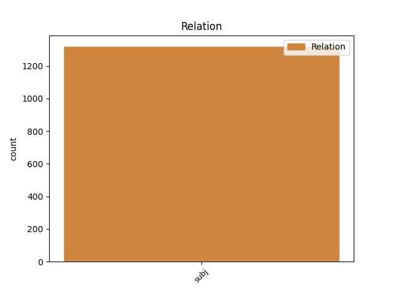

Distribution of features within this leaf

Agreement Rules sorted by frequency.
- When the dependent token is the direct object complements(comp:obj) of the head token, and the dependent token is NOUN.
1 Talibus _ _ _ _ 0 _ _ _
2 adfata affor VERB v-srpdfn- Aspect=Perf|Case=Nom|Gender=Fem|Number=Sing|Tense=Past|VerbForm=Part|Voice=Act 0 _ _ _
3 Aenean Aeneas NOUN n-s---ma- Case=Acc|Gender=Masc|Number=Sing 2 comp:obj _ LId=Aeneas1
4 ( _ _ _ _ 0 _ _ _
5 nec _ _ _ _ 0 _ _ _
6 sacra _ _ _ _ 0 _ _ _
7 morantur _ _ _ _ 0 _ _ _
8 iussa _ _ _ _ 0 _ _ _
9 viri _ _ _ _ 0 _ _ _
10 ) _ _ _ _ 0 _ _ _
11 , _ _ _ _ 0 _ _ _
12 Teucros _ _ _ _ 0 _ _ _
13 vocat _ _ _ _ 0 _ _ _
14 alta _ _ _ _ 0 _ _ _
15 in _ _ _ _ 0 _ _ _
16 templa _ _ _ _ 0 _ _ _
17 sacerdos _ _ _ _ 0 _ _ _
18 . _ _ _ _ 0 _ _ _
1 nam _ _ _ _ 0 _ _ _
2 fere _ _ _ _ 0 _ _ _
3 quem _ _ _ _ 0 _ _ _
4 quisque _ _ _ _ 0 _ _ _
5 vivos _ _ _ _ 0 _ _ _
6 pugnando _ _ _ _ 0 _ _ _
7 locum _ _ _ _ 0 _ _ _
8 ceperat _ _ _ _ 0 _ _ _
9 , _ _ _ _ 0 _ _ _
10 eum is PRON p-s---ma- Case=Acc|Gender=Masc|Number=Sing 14 comp:obj _ LId=is1
11 amissa _ _ _ _ 0 _ _ _
12 anima _ _ _ _ 0 _ _ _
13 corpore _ _ _ _ 0 _ _ _
14 tegebat tego VERB v3siia--- Aspect=Imp|Mood=Ind|Number=Sing|Person=3|Tense=Past|VerbForm=Fin|Voice=Act 0 _ _ _
15 . _ _ _ _ 0 _ _ _
1 sperabat spero VERB v3siia--- Aspect=Imp|Mood=Ind|Number=Sing|Person=3|Tense=Past|VerbForm=Fin|Voice=Act 0 _ _ _
2 propediem _ _ _ _ 0 _ _ _
3 magnas _ _ _ _ 0 _ _ _
4 copias _ _ _ _ 0 _ _ _
5 sese _ _ _ _ 0 _ _ _
6 habiturum habeo VERB v-sfpama- Case=Acc|Gender=Masc|Number=Sing|Tense=Fut|VerbForm=Part|Voice=Act 1 comp:obj _ LId=habeo1|SpaceAfter=No
7 , _ _ _ _ 0 _ _ _
8 si _ _ _ _ 0 _ _ _
9 Romae _ _ _ _ 0 _ _ _
10 socii _ _ _ _ 0 _ _ _
11 incepta _ _ _ _ 0 _ _ _
12 patravissent _ _ _ _ 0 _ _ _
13 . _ _ _ _ 0 _ _ _
1 deinde _ _ _ _ 0 _ _ _
2 , _ _ _ _ 0 _ _ _
3 ut _ _ _ _ 0 _ _ _
4 quisque _ _ _ _ 0 _ _ _
5 voluntarius _ _ _ _ 0 _ _ _
6 aut _ _ _ _ 0 _ _ _
7 ex _ _ _ _ 0 _ _ _
8 sociis _ _ _ _ 0 _ _ _
9 in _ _ _ _ 0 _ _ _
10 castra _ _ _ _ 0 _ _ _
11 venerat _ _ _ _ 0 _ _ _
12 , _ _ _ _ 0 _ _ _
13 aequaliter _ _ _ _ 0 _ _ _
14 distribuerat _ _ _ _ 0 _ _ _
15 , _ _ _ _ 0 _ _ _
16 ac _ _ _ _ 0 _ _ _
17 brevi _ _ _ _ 0 _ _ _
18 spatio _ _ _ _ 0 _ _ _
19 legiones _ _ _ _ 0 _ _ _
20 numero _ _ _ _ 0 _ _ _
21 hominum _ _ _ _ 0 _ _ _
22 expleverat _ _ _ _ 0 _ _ _
23 , _ _ _ _ 0 _ _ _
24 quom _ _ _ _ 0 _ _ _
25 initio _ _ _ _ 0 _ _ _
26 non _ _ _ _ 0 _ _ _
27 amplius amplus ADJ a-s---nac Case=Acc|Degree=Cmp|Gender=Neut|Number=Sing 30 comp:obj _ LId=amplus1
28 duobus _ _ _ _ 0 _ _ _
29 milibus _ _ _ _ 0 _ _ _
30 habuisset habeo VERB v3slsa--- Mood=Sub|Number=Sing|Person=3|Tense=Pqp|VerbForm=Fin|Voice=Act 0 _ _ _
31 . _ _ _ _ 0 _ _ _
1 uni unus NUM m-s---md- Case=Dat|Gender=Masc|Number=Sing 4 comp:obj _ _
2 si _ _ _ _ 0 _ _ _
3 qua _ _ _ _ 0 _ _ _
4 placet placeo VERB v3spia--- Mood=Ind|Number=Sing|Person=3|Tense=Pres|VerbForm=Fin|Voice=Act 0 _ _ _
5 , _ _ _ _ 0 _ _ _
6 culta _ _ _ _ 0 _ _ _
7 puella _ _ _ _ 0 _ _ _
8 sat _ _ _ _ 0 _ _ _
9 est _ _ _ _ 0 _ _ _
10 ; _ _ _ _ 0 _ _ _
Disagree Examples:
1 Cuius _ _ _ _ 0 _ _ _
2 verbosa _ _ _ _ 0 _ _ _
3 ne _ _ _ _ 0 _ _ _
4 sit _ _ _ _ 0 _ _ _
5 commendatio _ _ _ _ 0 _ _ _
6 , _ _ _ _ 0 _ _ _
7 Attende _ _ _ _ 0 _ _ _
8 , _ _ _ _ 0 _ _ _
9 cur _ _ _ _ 0 _ _ _
10 negare _ _ _ _ 0 _ _ _
11 cupidis _ _ _ _ 0 _ _ _
12 debeas _ _ _ _ 0 _ _ _
13 , _ _ _ _ 0 _ _ _
14 Modestis _ _ _ _ 0 _ _ _
15 etiam _ _ _ _ 0 _ _ _
16 offerre _ _ _ _ 0 _ _ _
17 quod qui PRON p-s---na- Case=Acc|Gender=Neut|Number=Sing 19 comp:obj _ LId=qui1
18 non _ _ _ _ 0 _ _ _
19 petierint peto VERB v3prsa--- Aspect=Perf|Mood=Sub|Number=Plur|Person=3|Tense=Past|VerbForm=Fin|Voice=Act 0 _ _ _
20 . _ _ _ _ 0 _ _ _
1 Tunc _ _ _ _ 0 _ _ _
2 diviso _ _ _ _ 0 _ _ _
3 tergore _ _ _ _ 0 _ _ _
4 Silvas silva NOUN n-p---fa- Case=Acc|Gender=Fem|Number=Plur 5 comp:obj _ _
5 petivit peto VERB v3sria--- Aspect=Perf|Mood=Ind|Number=Sing|Person=3|Tense=Past|VerbForm=Fin|Voice=Act 0 _ _ _
6 , _ _ _ _ 0 _ _ _
7 homini _ _ _ _ 0 _ _ _
8 ut _ _ _ _ 0 _ _ _
9 accessum _ _ _ _ 0 _ _ _
10 daret _ _ _ _ 0 _ _ _
11 . _ _ _ _ 0 _ _ _
1 Aetatis _ _ _ _ 0 _ _ _
2 mediae _ _ _ _ 0 _ _ _
3 quendam _ _ _ _ 0 _ _ _
4 mulier _ _ _ _ 0 _ _ _
5 non _ _ _ _ 0 _ _ _
6 rudis _ _ _ _ 0 _ _ _
7 Tenebat _ _ _ _ 0 _ _ _
8 annos annus NOUN n-p---ma- Case=Acc|Gender=Masc|Number=Plur 9 comp:obj _ _
9 celans celo VERB v-spp-fn- Case=Nom|Gender=Fem|Number=Sing|Tense=Pres|VerbForm=Part 0 _ _ _
10 elegantia _ _ _ _ 0 _ _ _
11 , _ _ _ _ 0 _ _ _
12 Animos _ _ _ _ 0 _ _ _
13 que _ _ _ _ 0 _ _ _
14 eiusdem _ _ _ _ 0 _ _ _
15 pulchra _ _ _ _ 0 _ _ _
16 iuvenis _ _ _ _ 0 _ _ _
17 ceperat _ _ _ _ 0 _ _ _
18 . _ _ _ _ 0 _ _ _
1 Aetatis _ _ _ _ 0 _ _ _
2 mediae _ _ _ _ 0 _ _ _
3 quendam _ _ _ _ 0 _ _ _
4 mulier _ _ _ _ 0 _ _ _
5 non _ _ _ _ 0 _ _ _
6 rudis _ _ _ _ 0 _ _ _
7 Tenebat _ _ _ _ 0 _ _ _
8 annos _ _ _ _ 0 _ _ _
9 celans _ _ _ _ 0 _ _ _
10 elegantia _ _ _ _ 0 _ _ _
11 , _ _ _ _ 0 _ _ _
12 Animos animus NOUN n-p---ma- Case=Acc|Gender=Masc|Number=Plur 17 comp:obj _ _
13 que _ _ _ _ 0 _ _ _
14 eiusdem _ _ _ _ 0 _ _ _
15 pulchra _ _ _ _ 0 _ _ _
16 iuvenis _ _ _ _ 0 _ _ _
17 ceperat capio VERB v3slia--- Mood=Ind|Number=Sing|Person=3|Tense=Pqp|VerbForm=Fin|Voice=Act 0 _ _ _
18 . _ _ _ _ 0 _ _ _
1 Ambae _ _ _ _ 0 _ _ _
2 , _ _ _ _ 0 _ _ _
3 videri _ _ _ _ 0 _ _ _
4 dum _ _ _ _ 0 _ _ _
5 volunt _ _ _ _ 0 _ _ _
6 illi ille PRON p-s---md- Case=Dat|Gender=Masc|Number=Sing 7 comp:obj _ _
7 pares par ADJ a-p---fn- Case=Nom|Gender=Fem|Number=Plur 0 _ _ _
8 , _ _ _ _ 0 _ _ _
9 Capillos _ _ _ _ 0 _ _ _
10 homini _ _ _ _ 0 _ _ _
11 legere _ _ _ _ 0 _ _ _
12 coepere _ _ _ _ 0 _ _ _
13 invicem _ _ _ _ 0 _ _ _
14 . _ _ _ _ 0 _ _ _